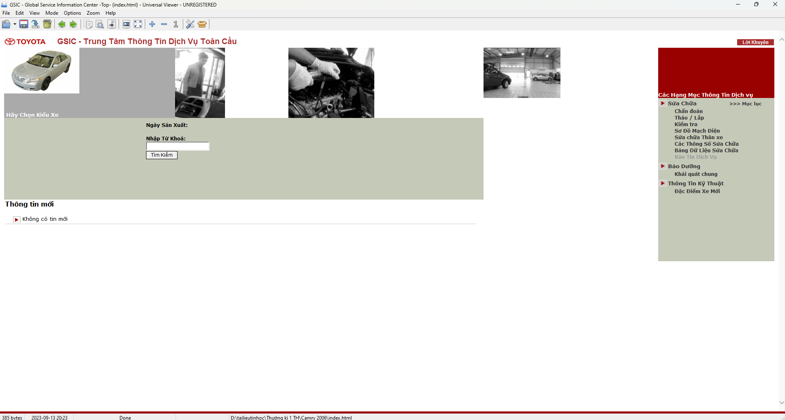

Tài liệu 1: Phần mềm TOYOTA TIS
Nguồn: Link tải
TOYOTA TIS là phần mềm kỹ thuật viên Toyota dùng để tra cứu sơ đồ mạch, DTC, cập nhật ECU…
Nguồn: Link tải
TOYOTA TIS là phần mềm kỹ thuật viên Toyota dùng để tra cứu sơ đồ mạch, DTC, cập nhật ECU…
Nguồn: ProCarManuals
Gồm sơ đồ mạch điện, hướng dẫn sửa chữa và bảo trì chi tiết cho Camry 2002–2006.